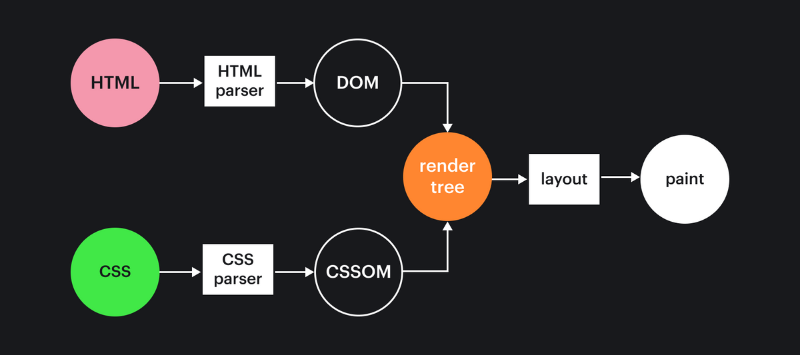

Основные инструменты
Что это такое и как они работают?
<!DOCTYPE html>
<html lang="en">
<head>
<link href="/style.css" rel="stylesheet">
<title>Document</title>
</head>
<body>
<img src="/hello.jpg" alt="Привет!">
<script src="/index.js"></script>
</body>
</html>
<html>
<head>
<meta charset="utf-8">
<title>Hello</title>
</head>
<body>
<p class="text">Hello world</p>
<img src="/hello.jpg" alt="Привет!">
</body>
</html>
html
____________|________
| |
head body
____|____ ___|___
| | | |
meta title p img
| |
"Hello" "Hello world"
// script.js
const image = document.getElementById("image")
<body>
<img src="/hello.jpg" alt="Hello world" id="image">
<script src="script.js"></script>
</body>
<body>
<img src="/hello.jpg" alt="Hello world" id="image">
<script src="script.js"></script>
</body>
<body>
<script src="script.js" defer></script>
<script src="script.js" async></script>
<img src="/hello.jpg" alt="Hello world" id="image">
</body>
CSSOM (CSS Object Model) — по аналогии с DOM, представление стилевых правил в виде дерева
<html>
<head>
<meta charset="utf-8">
<title>Hello</title>
</head>
<body>
<p class="text">Hello world</p>
<img src="/hello.jpg"
alt="Привет!">
</body>
</html>
body {
font-size: 14px;
}
.text {
color: red;
}
img {
max-width: 100%;
}
body
(font-size: 14px)
________|_________
| |
.text img
(color: red) (max-width: 100%)
html
|
body
(font-size: 14px)
________|________
| |
p.text img
(color: red) (max-width: 100%)
|
"Hello world"
Общая схема парсинга

const animate = () => {
// Код анимации
}
// 60 раз в 1000 миллисекунд, приблизительно 16 мс.
const intervalMS = 1000 / 60;
setInterval(animate, intervalMS);
window.requestAnimationFrame(animate);
Структура тегов
<тег атрибут="значение">контент</тег>
<тэг>
<тег атрибут="значение">контент<тег>контент</тег></тег>
<!DOCTYPE html>
<html lang="en">
<head>
<link href="/style.css" rel="stylesheet">
<script src="/index.js"></script>
<title>Document</title>
</head>
<body>
<img src="/hello.jpg" alt="Привет!">
<script src="/index1.js"></script>
</body>
</html>